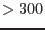

arfgen crossregionarf=yes spectrumset=spec_output.ds
crossreg_spectrumset=spec_input.ds detmaptype=dataset
detmaparray=image200.ds
This command returns the effective area in a region of the detector (defined in spec_output.ds) coming from the PSF overflow of flux from the sky region defined in spec_input.ds. The detmaparray, image200.ds, should be an image which includes both detector regions with a pixel size which is small compared to the size of the regions. It is recommended that the number of detmaparray pixels which falls within the spec_output.ds region is  to properly sample the region. But please note that this calculation is very compute intensive and very fine detector maps will lead to a very long run time.